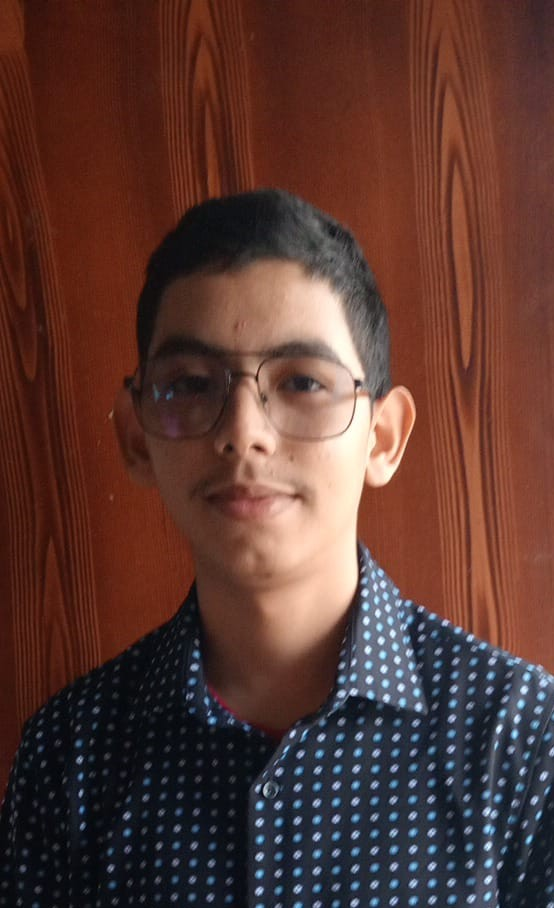

Portfolio personal |
|
|  | BienvenidoSoy Angel David Maradiaga de 12 BTP-Informática, del Instituto Marista la Inmaculada. Naci el 24 de febrero del 2009 en la ciudad de Comayagua, Honduras.
|
| © 31 Angel Maradiaga 12 BTP-Info. Clase Desarrollo Web |